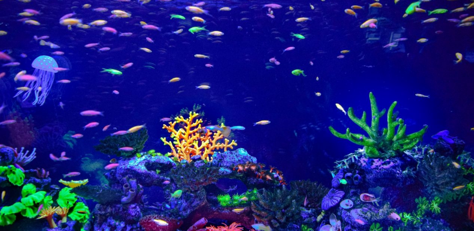

O que são Aquários?
Os aquários são ambientes controlados onde os seres aquáticos, como peixes, moluscos e corais, vivem em condições
ideais para sua sobrevivência. Eles reproduzem, de forma cuidadosa, os ecossistemas marinhos ou de água doce,
proporcionando uma experiência educativa, além de serem centros de pesquisa e preservação.

A Importância dos Aquários
Os aquários desempenham um papel fundamental na educação pública sobre os oceanos e as águas doces. Eles permitem
que as pessoas aprendam sobre as diversas espécies que habitam os ecossistemas aquáticos, além de promoverem a
conscientização sobre a conservação e os impactos ambientais que ameaçam esses ambientes naturais.
.png)
Conservação e Sustentabilidade
A conservação é um dos maiores objetivos dos aquários modernos. Além de exibir a vida marinha, muitos aquários
trabalham ativamente na preservação das espécies ameaçadas, com programas de reprodução, reabilitação e
reintrodução de animais no ambiente natural. O objetivo é aumentar o conhecimento sobre a biodiversidade e
reduzir a pressão sobre os ecossistemas naturais.
.png)